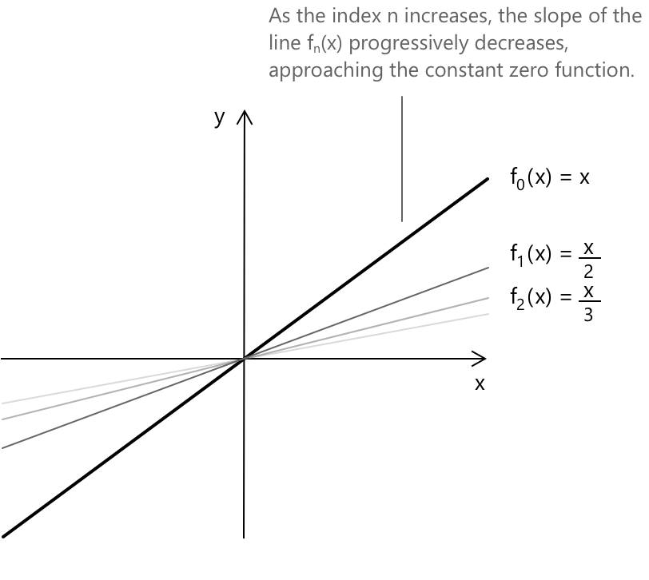

Послідовності функцій
Вступ
Уявіть, що у вас є список різних функцій, де кожна функція в списку пов'язана з числом \(n = 1, 2, 3… \in \mathbb{N} \). Отже, для кожного \(n\) ви отримуєте різну функцію, і цей впорядкований список функцій — це, по суті, те, чим є послідовність функцій. У формальних термінах, нехай \( A \subseteq \mathbb{R} \) буде непорожньою підмножиною і припустимо, що для кожного \( n \in \mathbb{N} \) ми маємо функцію \( f_n: A \rightarrow \mathbb{R} \). Тоді ми кажемо, що \( (f_n) = (f_1, f_2, f_3, \dots) \) є послідовністю функцій на \( A. \)
Розглянемо простий практичний приклад. Нехай \( (f_n) \) буде послідовністю функцій, де \(n \in \mathbb{N}_0\) та \( x \in \mathbb{R} \), визначеною як:
\[ f_n(x) = \frac{x}{n+1} \]
Це сімейство функцій, де кожна функція є лінійною, а кутовий коефіцієнт зменшується зі збільшенням \(n\). Для \(n = 0, 1, 2, 3, …\), ми маємо:
\[ \begin{aligned} f_0(x) &= \frac{x}{0+1} = x \\[0.5em] f_1(x) &= \frac{x}{1+1} = \frac{x}{2} \\[0.5em] f_2(x) &= \frac{x}{2+1} = \frac{x}{3} \\[0.5em] f_3(x) &= \frac{x}{3+1} = \frac{x}{4} \\[0.5em] \vdots \end{aligned} \]
Таким чином, послідовність функцій має вигляд:
\[ (f_n) = \left( x, \frac{x}{2}, \frac{x}{3}, \frac{x}{4}, \dots \right) \]
Графічно цю ситуацію можна спостерігати наступним чином:

Графік показує, як зі збільшенням індексу \(n\) кутовий коефіцієнт прямої \(f_n(x)\) поступово зменшується. Це відображає той факт, що функція spлющується до нульової функції \(f(x) = 0\) для кожного \(x\). Іншими словами, послідовність функцій \(f_n(x)\) поцентрово збігається до нульової функції при \(n \to \infty\).
Поцентрова збіжність
Нехай \( \lbrace f_n(x) \rbrace \) буде послідовністю функцій, визначених на спільній області визначення \( A \subseteq \mathbb{R} \), де \( n \in \mathbb{N} \). Ми кажемо, що послідовність \( \lbrace f_n(x) \rbrace \) збігається поцентрово на множині \( C \subseteq A \), якщо для кожного \( x \in C \) числова послідовність \( \lbrace f_n(x) \rbrace \) є збіжною. У цьому випадку гранична функція \( f(x) \) визначається як:
\[ f(x) = \lim_{n \to +\infty} f_n(x) \quad \forall \, x \in C \]
Множина \( C \) називається множиною поцентрової збіжності послідовності \( {f_n(x)} \).
Поцентрову збіжність також можна виразити наступним чином. Нехай \((f_n)\) — послідовність функцій, визначених на множині \(A\). Тоді \((f_n)\) збігається поцентрово до \(f : A \to \mathbb{R}\) тоді і тільки тоді, коли \(\forall \, x \in A\) та \(\forall \varepsilon > 0\) існує \(K \in \mathbb{N} \), таке що:
\[|f_n(x) - f(x)| < \varepsilon \quad \forall \; n \geq K\]
Іншими словами, для кожної фіксованої точки \( x \) ми можемо зробити \( f_n(x) \) настільки близькою до \( f(x) \), наскільки забажаємо, обравши достатньо велике \( n \). Індекс \( K \), необхідний для досягнення бажаної точності, може змінюватися залежно від \( x \) та \( \varepsilon \).
Розглянемо послідовність функцій, обговорену раніше:
\[ f_n(x) = \frac{x}{n+1}, \quad x \in \mathbb{R}, \quad n \in \mathbb{N}_0 \]
Дослідимо, що відбувається для кожного \(x\) при \(n \to \infty\). Якщо ми зафіксуємо довільне \(x\), наприклад \(x = 2\), відповідна послідовність буде такою:
\[ \begin{aligned} f_0(2) &= 2 \\[0.5em] f_1(2) &= 1 \\[0.5em] f_2(2) &= \frac{2}{3} \\[0.5em] f_3(2) &= \frac{2}{4} \\[0.5em] &\vdots \end{aligned} \]
Ця послідовність чисел прямує до нуля при \(n \to \infty\). Загалом, для кожного \(x \in \mathbb{R}\):
\[ \lim_{n \to \infty} f_n(x) = \lim_{n \to \infty} \frac{x}{n+1} = 0 \]
Отже, гранична функція має вигляд:
\[ f(x) = 0 \quad \forall \, x \in \mathbb{R} \]
З єдиності границь послідовностей дійсних чисел випливає, що поцентрова границя послідовності функцій \( (f_n) \) є єдиною.
Приклад
Розглянемо поведінку наступної послідовності функцій на проміжку \(-1 < x < 1\):
\[ f_n(x) = x^n \]
Для фіксованого значення \(x\) на цьому проміжку ми знаємо, що абсолютне значення \(x\) менше за \(1\), тобто \(|x| < 1\). Це означає, що ми розглядаємо степені числа, яке за абсолютним значенням менше за \(1\). За властивостями показників, коли основа має абсолютне значення менше за \(1\), послідовність \(x^n\) прямує до нуля, коли \(n\) прямує до нескінченності:
\[ \lim_{n \to \infty} x^n = 0 \]
Послідовність степенів дійсного числа \(x\) при \(|x| < 1\) збігається до нуля.
Отже, для кожного \(x\) на проміжку \(-1 < x < 1\) послідовність функцій \(f_n(x) = x^n\) збігається поточково до нульової функції.
\[ f(x) = 0 \quad \forall \, x \in (-1,1) \]
Наслідки поточкової збіжності
Нехай \( {f_n} \) — послідовність функцій \( f_n : A \to \mathbb{R} \), яка збігається поточково до функції \( f : A \to \mathbb{R} \). Виконуються такі властивості:
-
Якщо кожна \( f_n(x) \geq 0 \) для всіх \( x \in A \), то \( f(x) \geq 0 \) для всіх \( x \in A \). На практиці, якщо кожна функція \(f_n(x)\) є невивідною (невід'ємною) на \(A\), то гранична функція \(f(x)\) також буде невід'ємною на \(A\). Це відображає той факт, що границя послідовності невід'ємних дійсних чисел не може бути від'ємною.
-
Якщо кожна \( f_n \) є неспадною на \( A \), то \( f \) є неспадною на \( A \). Відповідно, якщо кожна функція \(f_n\) є неспадною на \(A\), то гранична функція \(f\) також буде неспадною на \(A\). Іншими словами, властивість монотонності зберігається при поточковій збіжності.
Рівномірна збіжність
Нехай \( (f_n) \) — послідовність функцій, визначених на множині \( A \subseteq \mathbb{R} \). Ми кажемо, що \( (f_n) \) збігається рівномірно на \( A \) до функції \( f : A \to \mathbb{R} \), якщо для будь-якого \( \varepsilon > 0 \) існує натуральне число \( K \), таке що для всіх \( n \geq K \) та всіх \( x \in A \) виконується наступна нерівність:
\[ |f_n(x) - f(x)| < \varepsilon \]
Якщо \( (f_n) \) збігається рівномірно до \( f \), то \( (f_n) \) також збігається поточково до \( f. \)
Розглянемо послідовність функцій:
\[ f_n(x) = \frac{x}{n}, \quad x \in [0,1], \quad n \in \mathbb{N}. \]
Для кожного фіксованого \(x\) на проміжку \([0,1]\) маємо:
\[ \lim_{n \to \infty} f_n(x) = 0 \]
Це означає, що послідовність \(f_n(x)\) збігається поточково до функції \(f(x) = 0\). Тепер перевіримо, чи є збіжність рівномірною на \([0,1]\). Обчислимо різницю між \(f_n(x)\) та граничною функцією \(f(x)\):
\[ |f_n(x) - f(x)| = \left| \frac{x}{n} - 0 \right| = \frac{x}{n} \]
Максимальне значення цієї різниці на проміжку \([0,1]\) дорівнює:
\[ \sup_{x \in [0,1]} |f_n(x) - f(x)| = \frac{1}{n} \]
Для будь-якого \(\varepsilon > 0\) ми можемо обрати \(N\), таке що:
\[ \frac{1}{N} < \varepsilon \]
Отже, для всіх \(n \geq N\) та для всіх \(x \in [0,1]\) маємо:
\[ |f_n(x) - f(x)| < \varepsilon \]
Це підтверджує, що послідовність функцій \(f_n(x) = \frac{x}{n}\) збігається рівномірно до граничної функції \(f(x) = 0\) на проміжку \([0,1]\).